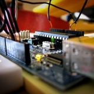
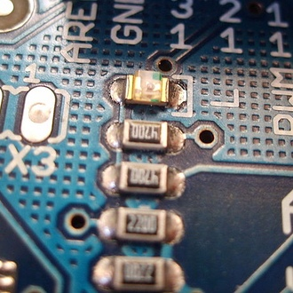

Arduino is an open-source single-board microcontroller designed to make the process of using electronics in multidisciplinary projects more accessible.

Arduino hardware is programmed using a Wiring-based language (syntax and libraries), similar to C++ with some slight simplifications and modifications, and a Processing-based integrated development environment.

The hardware consists of a simple open hardware design for the Arduino board with an Atmel AVR processor and on-board input/output support. The software consists of a standard programming language compiler and the boot loader that runs on the board.
The Arduino project received an honorary mention in the Digital Communities category at the 2006 Prix Ars Electronica.
The Arduino hardware reference designs are distributed under a Creative Commons Attribution Share-Alike 2.5 license and are available on the Arduino Web site. Layout and production files for some versions of the Arduino hardware are also available. The source code for the IDE and the on-board library are available and released under the GPLv2 license.
Arduino and Arduino-compatible boards make use of shields, which are printed circuit boards that sit atop an Arduino, and plug into the normally supplied pin-headers. These are expansions to the base Arduino. There are many functions of shields, from motor controls, to breadboarding (prototyping).